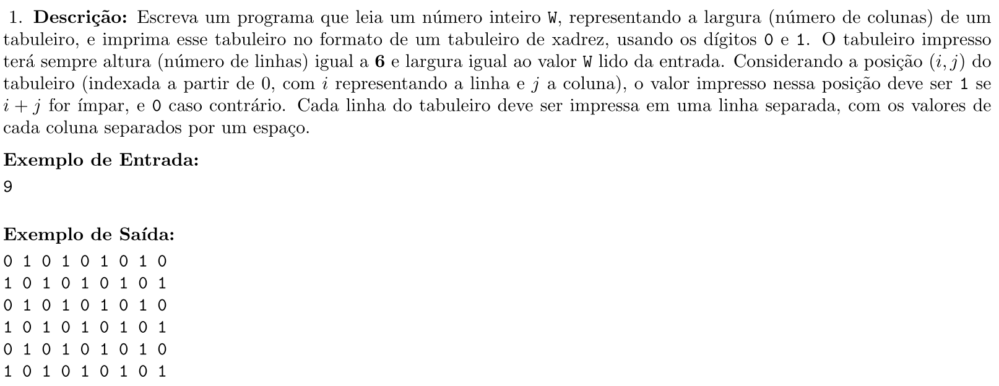
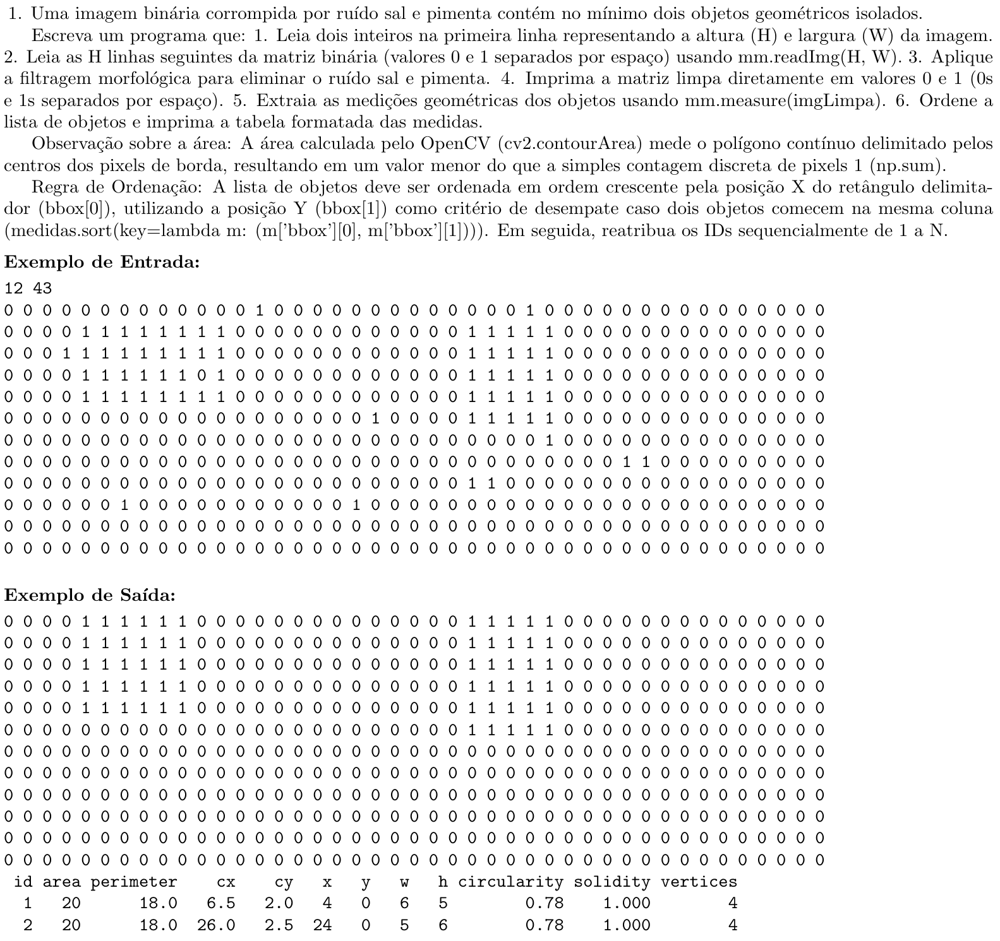

Apéndice A — Sobre o MCTest
O MCTest é um sistema de código aberto para criação e correção automática de exames parametrizados (Zampirolli, 2023). Ele oferece suporte a questões de múltipla escolha, dissertativas e de programação, estas últimas integradas ao VPL do Moodle, descrito no Apêndice B.
A versão do MCTest utilizada neste livro é a 5.4, disponível em https://github.com/fzampirolli/mctest. A subpasta book do repositório contém as versões 5.3, descrita em (Zampirolli, 2023), e 5.4, utilizada para gerar as provas apresentadas neste livro e atualmente em produção na UFABC (https://mctest.ufabc.edu.br).
A.1 Instalação do MCTest
A instalação recomendada utiliza o VirtualBox com Ubuntu 22.04. No terminal do Ubuntu, como root, execute:
wget https://raw.githubusercontent.com/fzampirolli/mctest/master/_setup-all.shEm seguida, substitua yourLogin pelo nome do usuário local e execute:
sed -i 's/\/home\/fz\//\/home\/yourLogin\//g' _setup-all.sh
source _setup-all.sh
pip install mysqlclientApós alguns minutos, o MCTest estará configurado. Para executá-lo:
source /home/yourLogin/PycharmProjects/runDjango.shO sistema fica então acessível em http://127.0.0.1:8000.
A.2 Criando um exame no MCTest
No MCTest, todo exame é configurado em uma tela de Exame, que reúne Turmas, Tópicos (associados a uma disciplina, como PDI-VC) e Questões — cada questão pertence a um único tópico. Além dos atributos de banco de dados, o exame possui parâmetros próprios, como o número de questões sorteadas e o número de variações geradas.
No caso das duas provas descritas neste apêndice, foi definido um conjunto de questões parametrizadas por prova, das quais um subconjunto é sorteado aleatoriamente para cada variação, totalizando 110 variações distintas — uma por estudante matriculado nas turmas.
O botão Create-Variations gera um novo conjunto de variações a cada acionamento. Quando as questões estão associadas a atividades VPL, o professor recebe por e-mail um arquivo *linker.json contendo todos os casos de teste das variações geradas. O botão Create-PDF gera, para cada turma, um PDF com as provas sorteadas por estudante, além de um arquivo *students_variations.csv com nome, e-mail e variação sorteada de cada estudante.
Cada acionamento do botão Create-Variations gera um novo conjunto de variações de exames. Após imprimir o PDF, é fundamental não alterar os atributos do exame, sob risco de invalidar a correção automática das provas já impressas ou aplicadas.
A.3 Criando uma questão paramétrica
Uma questão paramétrica no MCTest combina três elementos:
- Descrição — o enunciado da questão, escrito em LaTeX, contendo variáveis entre
[[code:variavel]], que são substituídas pelo valor sorteado para cada estudante; - Bloco de definição (
[[def: ... ]]) — um trecho de código Python, embutido na própria questão, responsável por sortear os parâmetros, calcular a solução de referência e montar os casos de teste; - Casos de teste para o Moodle (bloco
moodle_cases) — dicionário serializado em JSON contendo as entradas e saídas esperadas, consumido pela atividade VPL.
Um exemplo simplificado de definição de questão (adaptado da geração de um tabuleiro de xadrez h × w) é:
[[code:texto]]
\vspace{2mm}\noindent\textbf{Exemplo de Entrada:}\vspace{-2mm}\
\begin{verbatim}
[[code:caso0_inp]]
\end{verbatim}
\vspace{-2mm}\noindent\textbf{Exemplo de Saída:}\vspace{-2mm}\
\begin{verbatim}
[[code:caso0_out]]
\end{verbatim}
\begin{comment}
[[code:moodle_cases]]
\end{comment}
[[def:
import json
import numpy as np
from topic.morph import mm # TEM QUE INCLUIR "topic." no MCTest
def chess(h, w):
m = np.zeros((h, w), dtype='int')
for i in range(h):
for j in range(w):
if (i + j) % 2:
m[i][j] = 1
return m
# PARÂMETROS USADOS NA DESCRIÇÃO DA QUESTÃO
height = int(np.random.randint(5, 15))
# ENUNCIADO COMPLETO, COM O VALOR DE height JÁ INTERPOLADO
texto = (
r"\vspace{2mm}\noindent\textbf{Descrição:}\vspace{-2mm} "
r"Escreva um programa que leia um número inteiro \texttt{W}, representando a "
r"largura (número de colunas) de um tabuleiro, e imprima esse tabuleiro no "
r"formato de um tabuleiro de xadrez, usando os dígitos \texttt{0} e \texttt{1}. "
r"O tabuleiro impresso terá sempre altura (número de linhas) igual a "
f"\\textbf{{{height}}} "
r"e largura igual ao valor \texttt{W} lido da entrada. "
r"Considerando a posição $(i, j)$ do tabuleiro (indexada a partir de 0, com "
r"$i$ representando a linha e $j$ a coluna), o valor impresso nessa posição "
r"deve ser \texttt{1} se $i + j$ for ímpar, e \texttt{0} caso contrário. Cada "
r"linha do tabuleiro deve ser impressa em uma linha separada, com os valores "
r"de cada coluna separados por um espaço."
)
inp_list, out_list, test_cases = [], [], 4
for i in range(test_cases):
width = int(np.random.randint(500, 1500) / 100)
inp = str(width) + '\n'
out = mm.drawImg(chess(height, width)) + '\n'
inp_list.append(inp)
out_list.append(out)
cases = {}
cases['skills'] = ["matrizes", "laços de repetição", "formatação de saída"]
cases['description'] = [{"text": latex_to_text(texto)}]
cases['input'] = inp_list
cases['output'] = out_list
moodle_cases = json.dumps(cases)
caso0_inp = cases['input'][0]
caso0_out = cases['output'][0]
]]O valor de height é sorteado uma única vez por variação (para aparecer no enunciado), enquanto width é sorteado a cada caso de teste, aumentando a robustez da correção automática.
Vale destacar o papel duplo da variável texto nesse mecanismo. Ela é ao mesmo tempo:
- conteúdo do enunciado impresso, inserida na descrição LaTeX da questão através da tag
[[code:texto]], aparecendo no PDF gerado pelo botão Create-PDF; e - entrada do dicionário exportado para o Moodle, através da chave
cases['description'], que passa a compor o JSONmoodle_cases. É justamente esse campo que a atividade VPL exibe ao estudante quando ele abre a questão no Moodle para avaliá-la ou submeter uma solução.
Há, porém, uma diferença importante entre esses dois usos: o PDF é composto em LaTeX e, portanto, interpreta normalmente comandos como \textbf{}, \texttt{} ou $...$. Já o VPL do Moodle não processa LaTeX — ele espera texto puro. Por isso, ao montar cases['description'], texto não é inserido diretamente, mas sim passado pela função utilitária latex_to_text(), própria do MCTest, que remove (ou converte) os comandos e símbolos LaTeX do enunciado, produzindo uma versão em texto simples equivalente. Assim, [[code:texto]] no PDF continua recebendo o texto original, com toda a formatação LaTeX, enquanto cases['description'] recebe latex_to_text(texto), garantindo que o enunciado exibido no Moodle seja legível mesmo sem suporte a LaTeX.
Como texto é montada dentro do próprio bloco [[def: ...]] — no mesmo escopo em que height, width e os demais parâmetros são sorteados —, ela é recalculada a cada variação. Isso garante que o enunciado visto pelo estudante no Moodle seja sempre idêntico ao que foi impresso na prova em papel, mesmo quando o texto muda de estudante para estudante junto com os valores sorteados. A Seção A.4 retoma esse ponto em um caso real, no qual o enunciado é significativamente mais longo e descreve, além dos parâmetros numéricos, o próprio cenário visual gerado para cada variação.
A Figura A.1 mostra a questão do tabuleiro de xadrez efetivamente gerada pelo MCTest para uma das variações, com o enunciado já contendo o valor sorteado de height e o exemplo de entrada/saída correspondente ao primeiro caso de teste:

height sorteado para a variação e o exemplo de entrada/saída do primeiro caso de teste.
Ao acionar Create-PDF na tela da questão, uma nova variação é gerada a cada clique, permitindo conferir o enunciado antes de publicá-lo.
Para as duas provas da disciplina, esse mecanismo foi utilizado de forma mais ampla: cada questão paramétrica define não apenas os valores numéricos, mas também, em alguns casos, pequenas variações estruturais no enunciado (por exemplo, qual direção cardinal — Norte, Sul, Leste, Oeste — deve ser avaliada), dificultando a busca por soluções prontas na internet ou em ferramentas de IA generativa.
A.4 Exemplo real: uma questão do Simulado 4
Para ilustrar o mecanismo descrito na seção anterior com um caso concreto, apresenta-se a seguir uma questão efetivamente aplicada no Simulado 4 (tópico im4-Operadores Morfológicos, dificuldade 1, taxonomia de Bloom “remember”), do tipo questão de programação parametrizada com integração Moodle+VPL.
A questão pede ao estudante que escreva um programa capaz de:
- ler uma imagem binária, corrompida por ruído sal e pimenta, contendo ao menos dois objetos geométricos isolados;
- aplicar filtragem morfológica (abertura seguida de fechamento) para eliminar o ruído;
- extrair, a partir da imagem filtrada, as medidas geométricas de cada objeto (área, perímetro, centro, bounding box, circularidade, solidez e número de vértices), usando a função auxiliar
mm.measure; - ordenar os objetos por posição (coordenada X do bounding box, com Y como critério de desempate) e reatribuir os identificadores sequencialmente;
- imprimir a matriz limpa e a tabela de medidas no formato esperado pelo corretor automático.
No bloco [[def: ... ]] correspondente, um gerador de cena (gerarCena) sorteia aleatoriamente a altura e a largura da imagem, o tipo, o tamanho e a posição de cada objeto (quadrado, retângulo, triângulo ou bloco), garantindo que eles não se sobreponham, e em seguida acrescenta ruído sal e pimenta com 3% de probabilidade por pixel. Dez casos de teste distintos são gerados dessa forma para cada variação da prova, e o par entrada/saída do primeiro caso é reaproveitado no próprio enunciado como exemplo para o estudante. A biblioteca de morfologia (mm) é importada diretamente de morph.py, também disponível como módulo utilitário do próprio MCTest.
Em resumo, o enunciado pede ao estudante um programa que:
- leia, na primeira linha, dois inteiros H e W (altura e largura da imagem);
- leia as H linhas seguintes da matriz binária (0s e 1s separados por espaço), usando
mm.readImg(H, W); - aplique filtragem morfológica para remover o ruído sal e pimenta;
- imprima a matriz já filtrada, em 0s e 1s separados por espaço;
- extraia as medidas geométricas dos objetos com
mm.measure(imgLimpa); - ordene os objetos e imprima a tabela de medidas no formato esperado.
O enunciado ainda traz duas observações importantes para a correção automática: (i) a área calculada pelo OpenCV (cv2.contourArea) corresponde ao polígono contínuo delimitado pelos centros dos pixels de borda, sendo por isso menor do que a simples contagem de pixels 1 (np.sum); e (ii) a lista de objetos deve ser ordenada em ordem crescente pela coordenada X do bounding box (bbox[0]), usando a coordenada Y (bbox[1]) como critério de desempate, com os IDs reatribuídos sequencialmente de 1 a N após a ordenação.
Assim como no exemplo da Seção A.3, o texto do enunciado aqui também não é fixo: ele é montado dentro do próprio bloco [[def: ... ]], na variável Python texto, e desempenha o mesmo papel duplo já descrito — alimenta o PDF via [[code:texto]] e é exportado, já convertido por latex_to_text(), em cases['description'] dentro de moodle_cases, sendo essa a versão exibida ao estudante no VPL do Moodle. A diferença é que, neste caso real, é o cenário visual (imagem ruidosa, número e posição dos objetos) que muda de estudante para estudante a cada variação, enquanto a redação de texto permanece fixa entre variações, já que apenas os dados numéricos (imagem e casos de teste) são sorteados. O ideal seria que a redação também variasse a cada geração, como no exemplo anterior, em que o valor de height era interpolado diretamente no texto da descrição. A estrutura real utilizada (com trechos de sorteio de cenário omitidos por brevidade) é:
[[code:texto]]
\vspace{2mm}\noindent\textbf{Exemplo de Entrada:}\vspace{-2mm}\
\begin{verbatim}
[[code:caso0_inp]]
\end{verbatim}
\vspace{-2mm}\noindent\textbf{Exemplo de Saída:}\vspace{-2mm}\
\begin{verbatim}
[[code:caso0_out]]
\end{verbatim}
\begin{comment}
[[code:moodle_cases]]
\end{comment}
[[def:
import json
import numpy as n
import cv2
from topic.morph import mm # TEM QUE INCLUIR "topic." no MCTest
# ... geração da cena, do ruído e dos 10 casos de teste (inplist/outlist) ...
# ENUNCIADO COMPLETO, COM EXPLICAÇÃO DE ÁREA E DE ORDENAÇÃO
texto = (
"Uma imagem binária corrompida por ruído sal e pimenta contém no mínimo dois objetos geométricos isolados.\n\n"
"Escreva um programa que:\n"
"1. Leia dois inteiros ..."
)
cases = {}
cases['skills'] = ["morfologia matematica", "remocao de ruido", "mm.measure", "tabulacao"]
cases['description'] = [{"text": latex_to_text(texto)}]
cases['input'] = np.array(inplist).tolist()
cases['output'] = np.array(outlist).tolist()
moodle_cases = json.dumps(cases)
caso0_inp = cases['input'][0]
caso0_out = cases['output'][0]
]]Abaixo, a fotografia da questão efetivamente gerada e impressa para uma das 110 variações do Simulado 4, mostrando o enunciado, a imagem de entrada ruidosa e o exemplo de saída esperado (imagem filtrada e tabela de medidas):

A.5 Considerações finais
Este apêndice resumiu os passos para instalar o MCTest, criar exames e construir questões parametrizadas com integração ao VPL do Moodle. O uso combinado de variáveis sorteadas na descrição ([[code:...]]) e de código Python embutido na própria questão ([[def: ... ]]) permite gerar centenas de variações de prova a partir de um único modelo, cada uma corrigida automaticamente e de forma consistente — com a variável texto, em particular, garantindo que o mesmo enunciado seja exibido tanto no PDF impresso quanto na avaliação da questão pelo estudante no Moodle. O exemplo real do Simulado 4 (Seção A.4) ilustra como esse mecanismo é usado na prática para gerar questões de programação com cenários visuais distintos por estudante. O Apêndice B detalha como essas variações são publicadas e corrigidas no Moodle, e o Apêndice C descreve como restringir o acesso às provas por meio do SEB.